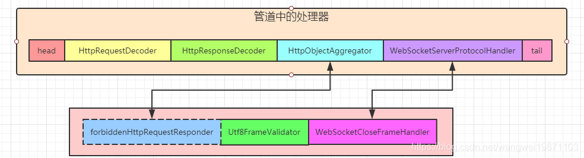

Websockcet处理
一、介绍
WebSocket，一种应用层协议，主要解决HTTP强交互时候的问题，节省带宽，提高传输效率，用在实时性比较强的地方，比如竞技游戏，RPC通信，即时通信等。
使用
使用WebSocket，在html中的js写socket = new WebSocket("ws://localhost:8080/wc");，即希望请求从HTTP升级到WebSocket，其实就是握手的协议内容。

服务端代码
x1ChannelPipeline pipeline = ch.pipeline(); 2pipeline.addLast(new HttpRequestDecoder());//HTTP请求解码3pipeline.addLast(new HttpResponseEncoder());//HTTP响应编码4pipeline.addLast(new HttpObjectAggregator(8192));//HTTP报文聚合5
6pipeline.addLast(new WebSocketServerProtocolHandler("/wc"));//WEBSOCKET协议处理器7//自定义的handler ，处理业务逻辑8pipeline.addLast(new MyTextWebSocketFrameHandler());二、WebSocketServerProtocolHandler
handlerAdded
处理器添加事件，初始化添加的时候，会调用handlerAdded进行处理器的添加，分别添加握手处理器WebSocketServerProtocolHandshakeHandler，UTF8文本帧验证器Utf8FrameValidator，关闭帧处理器WebSocketCloseFrameHandler：
181public void handlerAdded(ChannelHandlerContext ctx) {3 ChannelPipeline cp = ctx.pipeline();4 if (cp.get(WebSocketServerProtocolHandshakeHandler.class) == null) {5 // Add the WebSocketHandshakeHandler before this one.在前面添加一个握手处理器6 cp.addBefore(ctx.name(), WebSocketServerProtocolHandshakeHandler.class.getName(),7 new WebSocketServerProtocolHandshakeHandler(serverConfig));8 }9 if (serverConfig.decoderConfig().withUTF8Validator() && cp.get(Utf8FrameValidator.class) == null) {10 // Add the UFT8 checking before this one.在前面添加帧验证器11 cp.addBefore(ctx.name(), Utf8FrameValidator.class.getName(),12 new Utf8FrameValidator());13 }14 if (serverConfig.sendCloseFrame() != null) {//添加关闭帧处理器15 cp.addBefore(ctx.name(), WebSocketCloseFrameHandler.class.getName(),16 new WebSocketCloseFrameHandler(serverConfig.sendCloseFrame(), serverConfig.forceCloseTimeoutMillis()));17 }18}channelRead
之后就是客户端发来HTTP请求websocket握手。HTTP解码出消息给到WebSocketServerProtocolHandshakeHandler了。
验证协议
url。验证
GET的请求升级。替换当前处理器为
forbiddenHttpRequestResponder。创建握手
WebSocketServerHandshaker对象，进行握手。启动一个定义任务进行超时回调。
将WebSocketServerProtocolHandshakeHandler替换forbiddenHttpRequestResponder

删除HttpObjectAggregator和HttpContentCompressor(如果存在的话)
替换HTTP相关解码器并添加WebSocket编码器
握手响应发送成功后，发送完后会删除HTTP响应编码器。
571public void channelRead(final ChannelHandlerContext ctx, Object msg) throws Exception {2 final FullHttpRequest req = (FullHttpRequest) msg;3 // ---看2.1---4 if (isNotWebSocketPath(req)) {//不是websocket路径就不管5 ctx.fireChannelRead(msg);6 return;7 }8
9 try {10 if (!GET.equals(req.method())) {//只有GET支持的升级的11 // ---看2.2---12 sendHttpResponse(ctx, req, new DefaultFullHttpResponse(HTTP_1_1, FORBIDDEN, ctx.alloc().buffer(0)));13 return;14 }15 //创建握手工厂16 final WebSocketServerHandshakerFactory wsFactory = new WebSocketServerHandshakerFactory(17 getWebSocketLocation(ctx.pipeline(), req, serverConfig.websocketPath()),18 serverConfig.subprotocols(), serverConfig.decoderConfig());19 // ---看2.3---20 //创建一个握手处理器21 final WebSocketServerHandshaker handshaker = wsFactory.newHandshaker(req);22 final ChannelPromise localHandshakePromise = handshakePromise;//握手回调23 if (handshaker == null) {//不支持的版本24 WebSocketServerHandshakerFactory.sendUnsupportedVersionResponse(ctx.channel());25 } else {26
27 WebSocketServerProtocolHandler.setHandshaker(ctx.channel(), handshaker);//设置处理器28 ctx.pipeline().replace(this, "WS403Responder",29 // ---看2.4---30 WebSocketServerProtocolHandler.forbiddenHttpRequestResponder());//把当前处理器替换掉，变成40331
32 // ---看2.5---33 final ChannelFuture handshakeFuture = handshaker.handshake(ctx.channel(), req);34 handshakeFuture.addListener(new ChannelFutureListener() {35 36 public void operationComplete(ChannelFuture future) throws Exception {37 if (!future.isSuccess()) {//发送不成功38 localHandshakePromise.tryFailure(future.cause());39 ctx.fireExceptionCaught(future.cause());40 } else {//发送成功41 localHandshakePromise.trySuccess();42 // 保持兼容性 触发事件43 ctx.fireUserEventTriggered(//这个HANDSHAKE_COMPLETE是过时的44 WebSocketServerProtocolHandler.ServerHandshakeStateEvent.HANDSHAKE_COMPLETE);45 ctx.fireUserEventTriggered(//这个是新的46 new WebSocketServerProtocolHandler.HandshakeComplete(47 req.uri(), req.headers(), handshaker.selectedSubprotocol()));48 }49 }50 });51 // ---看2.6---52 applyHandshakeTimeout();53 }54 } finally {55 req.release();56 }57}isNotWebSocketPath
这个主要就是验证URL是否是WebSocke的URL，主要就是判断创建时候传进去的这个"/wc"。默认是比较整个字符串，不是比较开头。
41private boolean isNotWebSocketPath(FullHttpRequest req) {2 String websocketPath = serverConfig.websocketPath();3 return serverConfig.checkStartsWith() ? !req.uri().startsWith(websocketPath) : !req.uri().equals(websocketPath);4}sendHttpResponse
发送消息，如果响应的状态码不是200或者请求不是设置长连接，就关闭通道了。
141private static void sendHttpResponse(ChannelHandlerContext ctx, HttpRequest req, HttpResponse res) {2 ChannelFuture f = ctx.channel().writeAndFlush(res);3 //req不支持KeepAlive，或者res状态码不是200就等写完成了关闭通道4 if (!isKeepAlive(req) || res.status().code() != 200) {5 f.addListener(ChannelFutureListener.CLOSE);6 }7}8
9ChannelFutureListener CLOSE = new ChannelFutureListener() {10 11 public void operationComplete(ChannelFuture future) {12 future.channel().close();13 }14};newHandshaker
创建握手对象，根据请求头信息的sec-websocket-version来决定要哪个版本的握手对象，一般都是13，如果都不支持就会返回null。
241public WebSocketServerHandshaker newHandshaker(HttpRequest req) {2 //从请求头获取WEBSOCKET版本，根据不同版本，返回不同握手对象3 CharSequence version = req.headers().get(HttpHeaderNames.SEC_WEBSOCKET_VERSION);4 if (version != null) {5 if (version.equals(WebSocketVersion.V13.toHttpHeaderValue())) {6 // Version 13 of the wire protocol - RFC 6455 (version 17 of the draft hybi specification).7 return new WebSocketServerHandshaker13(8 webSocketURL, subprotocols, decoderConfig);9 } else if (version.equals(WebSocketVersion.V08.toHttpHeaderValue())) {10 // Version 8 of the wire protocol - version 10 of the draft hybi specification.11 return new WebSocketServerHandshaker08(12 webSocketURL, subprotocols, decoderConfig);13 } else if (version.equals(WebSocketVersion.V07.toHttpHeaderValue())) {14 // Version 8 of the wire protocol - version 07 of the draft hybi specification.15 return new WebSocketServerHandshaker07(16 webSocketURL, subprotocols, decoderConfig);17 } else {18 return null;19 }20 } else {//没指定版本的情况21 // Assume version 00 where version header was not specified22 return new WebSocketServerHandshaker00(webSocketURL, subprotocols, decoderConfig);23 }24}forbiddenHttpRequestResponder
这个就是用来创建禁止HTTP请求的响应器，只要握手对象创建好了，就不需要响应HTTP了，直接就把当前处理器WebSocketServerProtocolHandler给替换了。
151static ChannelHandler forbiddenHttpRequestResponder() {2 return new ChannelInboundHandlerAdapter() {3 4 public void channelRead(ChannelHandlerContext ctx, Object msg) throws Exception {5 if (msg instanceof FullHttpRequest) {6 ((FullHttpRequest) msg).release();7 FullHttpResponse response =8 new DefaultFullHttpResponse(HTTP_1_1, HttpResponseStatus.FORBIDDEN, ctx.alloc().buffer(0));9 ctx.channel().writeAndFlush(response);//从通道尾部开始10 } else {11 ctx.fireChannelRead(msg);12 }13 }14 };15}替换之后就是这样：

handshake
握手对象进行握手，其实就是发送响应数据。先会创建一个FullHttpResponse 响应，然后把跟HTTP相关的聚合，压缩处理器删除，如果有HttpServerCodec，那就在前面添加websocket的编解码器，等发送响应成功了把HttpServerCodec删了。如果是HTTP编解码器，就把解码器先替换成websocket的解码器，等发送响应成功了，再把编码器替换成websocket的编码器。
471public final ChannelFuture handshake(Channel channel, FullHttpRequest req,2 HttpHeaders responseHeaders, final ChannelPromise promise) {3
4 if (logger.isDebugEnabled()) {5 logger.debug("{} WebSocket version {} server handshake", channel, version());6 }7 FullHttpResponse response = newHandshakeResponse(req, responseHeaders);//创建响应8 ChannelPipeline p = channel.pipeline();9 if (p.get(HttpObjectAggregator.class) != null) {10 p.remove(HttpObjectAggregator.class);//删除聚合11 }12 if (p.get(HttpContentCompressor.class) != null) {//删除压缩13 p.remove(HttpContentCompressor.class);14 }15 ChannelHandlerContext ctx = p.context(HttpRequestDecoder.class);//请求解码器16 final String encoderName;17 if (ctx == null) {//不存在18 // this means the user use an HttpServerCodec19 ctx = p.context(HttpServerCodec.class);//HttpServerCodec是否存在20 if (ctx == null) {//也不存在，就没办法解码http了，失败了21 promise.setFailure(22 new IllegalStateException("No HttpDecoder and no HttpServerCodec in the pipeline"));23 return promise;24 }//在之前添加WebSocket编解码25 p.addBefore(ctx.name(), "wsencoder", newWebSocketEncoder());26 p.addBefore(ctx.name(), "wsdecoder", newWebsocketDecoder());27 encoderName = ctx.name();28 } else {29 p.replace(ctx.name(), "wsdecoder", newWebsocketDecoder());//替换HttpRequestDecoder30
31 encoderName = p.context(HttpResponseEncoder.class).name();32 p.addBefore(encoderName, "wsencoder", newWebSocketEncoder());//在HttpResponseEncoder之前添加编码器33 }//监听发出事件34 channel.writeAndFlush(response).addListener(new ChannelFutureListener() {35 36 public void operationComplete(ChannelFuture future) throws Exception {37 if (future.isSuccess()) {38 ChannelPipeline p = future.channel().pipeline();39 p.remove(encoderName);//成功了就把http的编码器删除了，HttpServerCodec或者HttpResponseEncoder40 promise.setSuccess();41 } else {42 promise.setFailure(future.cause());43 }44 }45 });46 return promise;47}发送回调前是这样：
发送回调成功后是这样：
applyHandshakeTimeout
发送可能会等好久，所以就给了个超时的定时任务，默认设置是10秒，超时了就触发超时事件，然后关闭通道，如果发送回调了，就把定时任务取消。
271private void applyHandshakeTimeout() {2 final ChannelPromise localHandshakePromise = handshakePromise;3 final long handshakeTimeoutMillis = serverConfig.handshakeTimeoutMillis();4 if (handshakeTimeoutMillis <= 0 || localHandshakePromise.isDone()) {5 return;//完成了就不管了6 }7 //起一个定时任务8 final Future<?> timeoutFuture = ctx.executor().schedule(new Runnable() {9 10 public void run() {11 if (!localHandshakePromise.isDone() &&12 localHandshakePromise.tryFailure(new WebSocketHandshakeException("handshake timed out"))) {13 ctx.flush()//没完成就刷出去，触发超时事件，然后关闭14 .fireUserEventTriggered(ServerHandshakeStateEvent.HANDSHAKE_TIMEOUT)15 .close();16 }17 }18 }, handshakeTimeoutMillis, TimeUnit.MILLISECONDS);19 //如果成功了，就把超时任务取消20 // Cancel the handshake timeout when handshake is finished.21 localHandshakePromise.addListener(new FutureListener<Void>() {22 23 public void operationComplete(Future<Void> f) throws Exception {24 timeoutFuture.cancel(false);25 }26 });27}完成握手后：
三、WebSocket13FrameDecoder解码器
我们拿这个解码器版本来讲，其他的原理都差不多的，这个就是我们在握手的时候创建的解码器，我们新来看看结构：
其实主要的操作还是在WebSocket08FrameDecoder里面，你会发现WebSocket13FrameDecoder没什么东西。所以我们主要还是讲WebSocket08FrameDecoder吧。
WebSocket08FrameDecoder解码器
属性
171//读取状态2enum State {3 READING_FIRST,//第一次读一个字节 FIN, RSV, OPCODE4 READING_SECOND,//解析出MASK, PAYLOAD LEN描述5 READING_SIZE,//解析具体长度PAYLOAD LEN6 MASKING_KEY,//解析掩码7 PAYLOAD,//解析数据8 CORRUPT//帧损坏了9}10
11
12private static final byte OPCODE_CONT = 0x0;//连续的frame13private static final byte OPCODE_TEXT = 0x1;//文本frame14private static final byte OPCODE_BINARY = 0x2;//二进制frame15private static final byte OPCODE_CLOSE = 0x8;//关闭帧16private static final byte OPCODE_PING = 0x9;//ping17private static final byte OPCODE_PONG = 0xA;//pong上面的属性可能不太清楚干嘛的，可以看下这篇文章。
然后后面的根据数据长度有不同的情况，第一种就是数据长度在0-125之间，掩码的情况，没掩码的情况就是掩码的4个字节没有了。：

第二种长度数据是126，这个不是表示数据长度就是126，只是说7位不够描述长度，长度要用2个字节描述，后面会直接跟着2个字节的长度数据：
第二种长度数据是127，这个不是表示数据长度就是127，只是说2字节不够描述长度，长度要用8个字节描述，后面会直接跟着8个字节的长度数据：
decode解码
主要还是这个方法，他就是从头开始解析这些数据，所以他分了好几个状态：
READING_FIRST：解析第一个字节，是不是最后一帧，扩展位怎么样，是什么帧类型。READING_SECOND：解析第二个字节，是否有掩码，数据长度是多少。READING_SIZE:处理长度，如果是0-125，那好办，如果是126，就要读取后面2个字节的数据，如果是127，就要读取后面8个字节的数据。MASKING_KEY：如果有掩码就解析出4字节掩码。PAYLOAD：解析出最后的数据。CORRUPT：帧数据可能损坏了，可能要关闭连接。
READING_FIRST
用了位操作去解析第一个字节，这里的Opcode实际上就是帧类型，比如0表示持续的帧，1表示文本帧，2表示二进制帧等等。
181case READING_FIRST:2 if (!in.isReadable()) {3 return;4 }5
6 framePayloadLength = 0;7
8 // FIN, RSV, OPCODE9 byte b = in.readByte();10 frameFinalFlag = (b & 0x80) != 0;//取出FIN，表示是不是一帧的最后一段11 frameRsv = (b & 0x70) >> 4;//取出RSV12 frameOpcode = b & 0x0F;//取出Opcode13
14 if (logger.isTraceEnabled()) {15 logger.trace("Decoding WebSocket Frame opCode={}", frameOpcode);16 }17
18 state = State.READING_SECOND;READING_SECOND
然后读取掩码位，读取长度，进行一些合法性的检查，如果违反协议了，就直接发送关闭帧。
701case READING_SECOND:2if (!in.isReadable()) {3 return;4}5// MASK, PAYLOAD LEN 16b = in.readByte();//再读一个字节7frameMasked = (b & 0x80) != 0;//读取掩码，1表示存在，4字节，0不存在8framePayloadLen1 = b & 0x7F;//获取内容长度9
10if (frameRsv != 0 && !config.allowExtensions()) {//有扩展标志位，但是不允许扩展11 protocolViolation(ctx, in, "RSV != 0 and no extension negotiated, RSV:" + frameRsv);12 return;13}14
15if (!config.allowMaskMismatch() && config.expectMaskedFrames() != frameMasked) {//需要掩码加密，但是发来的没进行掩码加密16 protocolViolation(ctx, in, "received a frame that is not masked as expected");17 return;18}19//控制操作，关闭，ping，pong20if (frameOpcode > 7) { // control frame (have MSB in opcode set)21
22 // control frames MUST NOT be fragmented23 if (!frameFinalFlag) {//控制帧不用分段了24 protocolViolation(ctx, in, "fragmented control frame");25 return;26 }27
28 // control frames MUST have payload 125 octets or less29 if (framePayloadLen1 > 125) {//长度超过12530 protocolViolation(ctx, in, "control frame with payload length > 125 octets");31 return;32 }33 //不为控制帧34 // check for reserved control frame opcodes35 if (!(frameOpcode == OPCODE_CLOSE || frameOpcode == OPCODE_PING36 || frameOpcode == OPCODE_PONG)) {37 protocolViolation(ctx, in, "control frame using reserved opcode " + frameOpcode);38 return;39 }40 //关闭帧有内容的话，必须是2个字节的无符号整形表示状态码41 // close frame : if there is a body, the first two bytes of the42 // body MUST be a 2-byte unsigned integer (in network byte43 // order) representing a getStatus code44 if (frameOpcode == 8 && framePayloadLen1 == 1) {45 protocolViolation(ctx, in, "received close control frame with payload len 1");46 return;47 }48} else { // data frame 数据帧，不是持续，文本，二进制帧的话也违反协议了49 // check for reserved data frame opcodes50 if (!(frameOpcode == OPCODE_CONT || frameOpcode == OPCODE_TEXT51 || frameOpcode == OPCODE_BINARY)) {52 protocolViolation(ctx, in, "data frame using reserved opcode " + frameOpcode);53 return;54 }55
56 // check opcode vs message fragmentation state 1/257 if (fragmentedFramesCount == 0 && frameOpcode == OPCODE_CONT) {//是持续帧，帧个数为058 protocolViolation(ctx, in, "received continuation data frame outside fragmented message");59 return;60 }61 //帧的端数不为0，但是不是持续帧，也不是ping62 // check opcode vs message fragmentation state 2/263 if (fragmentedFramesCount != 0 && frameOpcode != OPCODE_CONT && frameOpcode != OPCODE_PING) {64 protocolViolation(ctx, in,65 "received non-continuation data frame while inside fragmented message");66 return;67 }68}69
70state = State.READING_SIZE;protocolViolation违反协议，如果发现有违反协议的，直接把数据丢弃，如果通道没关闭，且设置了违反协议就关闭通道的话就发送关闭帧，抛出异常。
221private void protocolViolation(ChannelHandlerContext ctx, ByteBuf in, CorruptedWebSocketFrameException ex) {2 state = State.CORRUPT;//帧损坏的状态3 int readableBytes = in.readableBytes();4 if (readableBytes > 0) {5 in.skipBytes(readableBytes);//略过，能帮助释放内存6 }7 if (ctx.channel().isActive() && config.closeOnProtocolViolation()) {//帧坏了就关闭通道8 Object closeMessage;9 if (receivedClosingHandshake) {10 closeMessage = Unpooled.EMPTY_BUFFER;//空帧11 } else {12 WebSocketCloseStatus closeStatus = ex.closeStatus();13 String reasonText = ex.getMessage();14 if (reasonText == null) {15 reasonText = closeStatus.reasonText();16 }17 closeMessage = new CloseWebSocketFrame(closeStatus, reasonText);//封装成关闭帧18 }19 ctx.writeAndFlush(closeMessage).addListener(ChannelFutureListener.CLOSE);//发出去，成功后关闭通道20 }21 throw ex;//抛出异常22}READING_SIZE
这个就是前面说的处理长度的几种情况。
391case READING_SIZE://处理长度2//如果是126的话，紧跟着后面需要有两个字节的长度3// Read frame payload length4if (framePayloadLen1 == 126) {5 if (in.readableBytes() < 2) {6 return;7 }8 framePayloadLength = in.readUnsignedShort();//读取2次节长度9 if (framePayloadLength < 126) {//长度无效10 protocolViolation(ctx, in, "invalid data frame length (not using minimal length encoding)");11 return;12 }13} else if (framePayloadLen1 == 127) {//如果是127，后面需要8个字节14 if (in.readableBytes() < 8) {15 return;16 }17 framePayloadLength = in.readLong();18 // TODO: check if it's bigger than 0x7FFFFFFFFFFFFFFF, Maybe19 // just check if it's negative?20
21 if (framePayloadLength < 65536) {//小于等于2字节的22 protocolViolation(ctx, in, "invalid data frame length (not using minimal length encoding)");23 return;24 }25} else {26 framePayloadLength = framePayloadLen1;//0-125的情况27}28//大于最大长度默认6553629if (framePayloadLength > config.maxFramePayloadLength()) {30 protocolViolation(ctx, in, WebSocketCloseStatus.MESSAGE_TOO_BIG,31 "Max frame length of " + config.maxFramePayloadLength() + " has been exceeded.");32 return;33}34
35if (logger.isTraceEnabled()) {36 logger.trace("Decoding WebSocket Frame length={}", framePayloadLength);37}38
39state = State.MASKING_KEY;MASKING_KEY
解析出掩码，其实这个掩码加密解密只是用了异或^。
111case MASKING_KEY://解析掩码2if (frameMasked) {//有掩码 4字节的3 if (in.readableBytes() < 4) {4 return;5 }6 if (maskingKey == null) {7 maskingKey = new byte[4];8 }9 in.readBytes(maskingKey);10}11state = State.PAYLOAD;PAYLOAD
有掩码先解码，然后根据不同的Opcode类型封装成对应的帧数据。
741case PAYLOAD://解析数据2if (in.readableBytes() < framePayloadLength) {3 return;4}5
6ByteBuf payloadBuffer = null;7try {8 payloadBuffer = readBytes(ctx.alloc(), in, toFrameLength(framePayloadLength));9
10 // Now we have all the data, the next checkpoint must be the next11 // frame12 state = State.READING_FIRST;//回到初始要解析的状态13
14 // Unmask data if needed15 if (frameMasked) {//如果有掩码，要解码16 unmask(payloadBuffer);17 }18
19 // Processing ping/pong/close frames because they cannot be20 // fragmented21 if (frameOpcode == OPCODE_PING) {//如果是ping22 out.add(new PingWebSocketFrame(frameFinalFlag, frameRsv, payloadBuffer));23 payloadBuffer = null;24 return;25 }26 if (frameOpcode == OPCODE_PONG) {//如果是pong27 out.add(new PongWebSocketFrame(frameFinalFlag, frameRsv, payloadBuffer));28 payloadBuffer = null;29 return;30 }31 if (frameOpcode == OPCODE_CLOSE) {//收到关闭帧，也要回一个关闭帧32 receivedClosingHandshake = true;33 checkCloseFrameBody(ctx, payloadBuffer);34 out.add(new CloseWebSocketFrame(frameFinalFlag, frameRsv, payloadBuffer));35 payloadBuffer = null;36 return;37 }38
39 // Processing for possible fragmented messages for text and binary40 // frames41 if (frameFinalFlag) {//是最后一帧42 // Final frame of the sequence. Apparently ping frames are43 // allowed in the middle of a fragmented message44 if (frameOpcode != OPCODE_PING) {//允许中间发心跳帧，心跳帧不算，不是心跳帧才要清零45 fragmentedFramesCount = 0;46 }47 } else {48 // Increment counter49 fragmentedFramesCount++;//帧个数+1，为持续帧50 }51
52 // Return the frame53 if (frameOpcode == OPCODE_TEXT) {//文本类型54 out.add(new TextWebSocketFrame(frameFinalFlag, frameRsv, payloadBuffer));55 payloadBuffer = null;56 return;57 } else if (frameOpcode == OPCODE_BINARY) {//二进制58 out.add(new BinaryWebSocketFrame(frameFinalFlag, frameRsv, payloadBuffer));59 payloadBuffer = null;60 return;61 } else if (frameOpcode == OPCODE_CONT) {//持续帧62 out.add(new ContinuationWebSocketFrame(frameFinalFlag, frameRsv,63 payloadBuffer));64 payloadBuffer = null;65 return;66 } else {67 throw new UnsupportedOperationException("Cannot decode web socket frame with opcode: "68 + frameOpcode);69 }70} finally {71 if (payloadBuffer != null) {//没有解析出来要释放72 payloadBuffer.release();73 }74} unmask解码，其实就是取出4字节掩码，封装成一个整数，然后跟数据进行每次8位的轮询的异或运算解码。
261private void unmask(ByteBuf frame) {2 int i = frame.readerIndex();3 int end = frame.writerIndex();4
5 ByteOrder order = frame.order();6
7 // Remark: & 0xFF is necessary because Java will do signed expansion from8 // byte to int which we don't want.9 int intMask = ((maskingKey[0] & 0xFF) << 24)10 | ((maskingKey[1] & 0xFF) << 16)11 | ((maskingKey[2] & 0xFF) << 8)12 | (maskingKey[3] & 0xFF);13
14
15 if (order == ByteOrder.LITTLE_ENDIAN) {16 intMask = Integer.reverseBytes(intMask);17 }18
19 for (; i + 3 < end; i += 4) {20 int unmasked = frame.getInt(i) ^ intMask;21 frame.setInt(i, unmasked);22 }23 for (; i < end; i++) {24 frame.setByte(i, frame.getByte(i) ^ maskingKey[i % 4]);25 }26}CORRUPT
一般是有违反协议了，就丢弃了，但是就怕其他问题要读一帧，不然父类处理会出问题。
71case CORRUPT://帧坏了2if (in.isReadable()) {3 // If we don't keep reading Netty will throw an exception saying4 // we can't return null if no bytes read and state not changed.5 in.readByte();//要读一下，否则父类会报错6}7return; 问题在于父类ByteToMessageDecoder的callDecode中有：
如果没读的话就会报异常啦。不过搜寻能转为CORRUPT的只有违反协议的方法，那个方法里面还是有略过读数据的，不会导致父类报错，我估计是如果自己手动操作状态为CORRUPT，可能是要读一下的。
四、Utf8FrameValidator
这个是验证文本帧是否是UTF8编码的。来看下吧。其实他就是检查是否是最后一帧，如果是文本帧的话就检测内容，不是UTF8的就抛异常。如果是持续帧，只有第一帧是文本的才会开始检测，所以后续来的肯定是文本帧，就不用判断是不是文本帧了，只要判断是不是在检测就好了。
491public void channelRead(ChannelHandlerContext ctx, Object msg) throws Exception {3 if (msg instanceof WebSocketFrame) {4 WebSocketFrame frame = (WebSocketFrame) msg;5
6 try {7
8 if (((WebSocketFrame) msg).isFinalFragment()) {//是最后帧9
10 if (!(frame instanceof PingWebSocketFrame)) {11 fragmentedFramesCount = 0;12
13 // Check text for UTF8 correctness监测文本帧14 if ((frame instanceof TextWebSocketFrame) ||15 (utf8Validator != null && utf8Validator.isChecking())) {16 // Check UTF-8 correctness for this payload17 checkUTF8String(frame.content());18
19 // This does a second check to make sure UTF-820 // correctness for entire text message21 utf8Validator.finish();//如果不是就报异常22 }23 }24 } else {//不是最后帧25 // Not final frame so we can expect more frames in the26 // fragmented sequence27 if (fragmentedFramesCount == 0) {//是第一帧，只检测文本28 // First text or binary frame for a fragmented set29 if (frame instanceof TextWebSocketFrame) {30 checkUTF8String(frame.content());//检测内容31 }32 } else {//不是第一帧，继续检测，因为前面是文本的，所以持续帧也肯定是33 // Subsequent frames - only check if init frame is text34 if (utf8Validator != null && utf8Validator.isChecking()) {35 checkUTF8String(frame.content());36 }37 }38
39 // Increment counter40 fragmentedFramesCount++;//帧数累加41 }42 } catch (CorruptedWebSocketFrameException e) {43 frame.release();44 throw e;45 }46 }47
48 super.channelRead(ctx, msg);49}decode
主要是判断是不是关闭帧，是的话就拿出开始创建的握手对象，然后实现关闭，其实就是发送关闭帧。否则的话就让父类WebSocketProtocolHandler处理。
141protected void decode(ChannelHandlerContext ctx, WebSocketFrame frame, List<Object> out) throws Exception {3 if (serverConfig.handleCloseFrames() && frame instanceof CloseWebSocketFrame) {//如果要处理关闭帧4 WebSocketServerHandshaker handshaker = getHandshaker(ctx.channel());5 if (handshaker != null) {6 frame.retain();7 handshaker.close(ctx.channel(), (CloseWebSocketFrame) frame);//握手处理器来处理关闭8 } else {9 ctx.writeAndFlush(Unpooled.EMPTY_BUFFER).addListener(ChannelFutureListener.CLOSE);//直接处理10 }11 return;12 }13 super.decode(ctx, frame, out);14}
ß